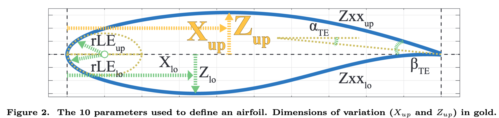

I, BayesOpt
Taking Humans Out of the Loop
Gergely Flamich
1 A Talk about Bayesian Optimization
Slides available at: https://rawcdn.githack.com/gergely-flamich/tmx-bayesopt-talk/ccf95ef72b9b1e586a3cd8a29bf5ece17a9efd99/presentation.html
1.1 Motivation
Let's look at a few practical problems!
1.1.1 Aerodynamics

1.1.2 Molecules
1.1.3 Hardware

1.1.4 Training Machine Learning Algorithms
1.1.5 Why These Problems Are Hard
- Data is hard to obtain, e.g. takes long or very expensive
- Therefore data is scarce
- Design settings influence the outcome in complicated ways
- (Usually) no access to gradient information
1.2 The Optimization Problem, Abstractly
1.2.1 The Objective Function
- Parameter space: \(\mathcal{X}\)
- wing design, reactants, ML hyperparameters
- Output space: \(\mathbb{R}\)
- drug potency, test accuracy
- Objective function: \(f: \mathcal{X} \rightarrow \mathbb{R}\)
- wind tunnel, chemical reaction, ML training algorithm
We assume that \(f\) is very expensive to evaluate.
1.2.2 The Optimization Problem
We want to find the parameter setting \(x^* \in \mathcal{X}\) that minimizes \(f\).
In other words, want to find \(x\) with smallest \(f(x)\):
\(x^* = argmin_{x\in\mathcal{X}} f(x)\)
1.3 Possible Solutions
1.3.1 Just try every possible parameter!
Evaluate \(f\) on every parameter in \(\mathcal{X}\), return best-performing one.
- Will find best solution
- Cannot be done if the parameter space is large
1.3.2 Randomly try possible parameters!
Sample \(S\) parameter settings from \(\mathcal{X}\), and evaluate \(f\) only on those.
- Will find approximate solution
- Approximation becomes better as \(S\) increases.
- Dumb (doesn't consider obtained information)
- Yet effective
1.3.3 Try to predict \(f\)!
Maybe we already collected some data: \(\mathcal{D} = \{(x_1, f(x_1)), ... (x_N, f(x_N)) \}\).
Then, we could fit maybe a surrogate model \(g\) that is cheap to evaluate.
We can evaluate \(g\) on every parameter setting, and evaluate \(f\) at the best setting, as predicted by \(g\)!
1.3.4 Predict - Evaluate loop
- Fit \(g\) to already existing data \(\mathcal{D}\).
Find proposal setting:
\(\hat{x} = argmin_{x \in \mathcal{X}} g(x)\)
- Try proposal: \(f(\hat{x})\).
- Add \((\hat{x}, f(\hat{x}))\) to the dataset \(\mathcal{D}\).
What \(g\) to use?
1.3.5 Fit a neural network!
1.3.6 Problems with a neural network
- Will overfit
- Will do weird stuff far away from the data
- How can we fix this?
2 Gaussian Process Regression
2.1 Linear Regression
One model to rule them all
\(y = mx + b\)
2.1.1 Fitting to 2 points
2.1.2 Fitting to more than 2 points
2.1.3 What if we have only 1 point???
2.2 Distributions over Functions
2.2.1 Bayesian Linear Regression
Fitting to 1 data point is clearly impossible.
We will introduce uncertainty about the model, using some prior belief.
Then, given the evidence we update, and get our posterior belief.
The posterior will contain models that are consistent with our data.
2.2.2 Bayes Rule
\(\overbrace{p(g \mid \mathcal{D})}^{\text{updated belief}} = \frac{\overbrace{p(\mathcal{D} \mid g)}^{\text{evidence}}\overbrace{p(g)}^{\text{earier belief}}}{\underbrace{p(\mathcal{D})}_{\text{"normalizing constant"}}}\)
2.2.3 Putting a Prior on Linear Regression
Assume, that the slope parameter is Gaussian distributed:
\(m \sim \mathcal{N}(0, 1), \quad b \sim \mathcal{N}(0, 1)\)
2.2.4 What the prior and posterior look like

2.3 Gaussian Processes
For linear regression we put the prior on the parameters, which then specified the function.
Gaussian Processes (GP) allow us to put the prior straight on the function.
This is done through the use of kernels functions \(k(x, x')\).
The kernel defines how the function's values \(f(x), f(x')\) are related to each other at the inputs \(x, x'\).
2.4 Different Kernels
The kernel defines, what the properties that the samples obey.
This way we can bake domain knowledge into our model.
2.4.1 Linear Kernel
\(k_{lin}(x, x') = \alpha^2 (x \cdot x')\)
- \(\alpha^2\): variance
2.4.2 Exponentiated Quadratic Kernel
\(k_{EQ}(x, x') = \alpha^2 \exp\left( -\frac{(x - x')^2}{2\ell^2} \right)\)
- \(\alpha^2\): variance
- \(\ell\): length scale
2.4.3 Periodic Kernel
\(k_{periodic}(x, x') = \alpha^2 \exp \left( -\frac{2\sin^2(\pi (x - x')^2 / p)}{\ell^2} \right)\)
- \(\alpha^2\): variance
- \(\ell\): length scale
- \(p\): period
2.5 Non-parametric Models
GPs are a form of non-parametric model.
In our setting, this means, that the structure of the model is not fixed ahead of time, and its complexity grows as more information becomes available.
2.6 Prediction using Gaussian processes
Given a new input point \(x^*\), GPs allow us to form the predictive posterior: \(p(x^* \mid \mathcal{Data})\).
2.7 Tuning the Hyperparameters
Even though the model will accomodate the data, we would like the model family that fits the data best.
Hence, we must tune the hyperparameters of the model.
Luckily for GPs, there is a very natural way: we maximize the prior likelihood of the dataset: \(p(\mathcal{D})\).
2.7.1 Small example
2.8 Advantages of Gaussian Processes
- Interpretable
- Very sample-efficient
- Very flexible
- Strong mathematical maturity
2.9 Drawbacks of Gaussian Processes
- Both training and prediction grow as \(\mathcal{O}(N^3)\), where \(N\) is the size of the dataset.
- Hard to do multi-output prediction (though not impossible)
- Finding the right kernel can be tricky for more complicated problems, especially in high dimensions
3 Bayesian Optimization
3.1 The Optimization Problem, Revisited
- We wish to minimize the objective function \(f\).
- Want to incorporate already collected information: \(\mathcal{D} = \{(x_1, f(x_1)), ... (x_N, f(x_N)) \}\).
- Want to use a sample-efficient surrogate model
- GPs are a perfect match!
3.2 The final ingredient: Acquisition functions
Acquisition functions tell us potentially how good a solution is.
For us, acquistion functions will be the means through which we can incorporate uncertainty into the selection.
3.2.1 The upper confidence bound
We will use the upper confidence bound:
\(\alpha(x) = \mu(x) + 2\sigma(x)\)
where \(\mu(x)\) is the predictive mean of the GP and \(\sigma(x)\) is the predictive standard deviation.
3.3 Predict - Evaluate loop, Revisited
We pick our surrogate model to be a GP.
Then, the optimization loop becomes:
- Fit the GP to already existing data \(\mathcal{D}\).
Find proposal setting:
\(\hat{x} = argmin_{x \in \mathcal{X}} \alpha(x)\)
- Try proposal: \(f(\hat{x})\).
- Add \((\hat{x}, f(\hat{x}))\) to the dataset \(\mathcal{D}\).
- Repeat until satisfaction.
3.4 A Toy Example
We are going to optimize the toy function
\(f(x) = \frac{sin(x)}{x} + \frac{1}{2}\left(x - \frac{1}{2}\right)^2\)
3.4.1 Toy Example

3.4.2 Toy Example
3.4.3 Toy Example
3.4.4 Toy Example
3.4.5 Toy Example
3.5 A More Involved Example
4 References
4.1 References I
- https://www.theguardian.com/society/2020/feb/20/antibiotic-that-kills-drug-resistant-bacteria-discovered-through-ai
- https://en.wikipedia.org/wiki/Raspberry_Pi
- Gaier, Adam, Alexander Asteroth, and Jean-Baptiste Mouret. "Aerodynamic design exploration through surrogate-assisted illumination." 18th AIAA/ISSMO Multidisciplinary Analysis and Optimization Conference. 2017.
4.2 References II
- Gómez-Bombarelli, Rafael, et al. "Automatic chemical design using a data-driven continuous representation of molecules." ACS central science 4.2 (2018): 268-276
- Snoek, Jasper, Hugo Larochelle, and Ryan P. Adams. "Practical bayesian optimization of machine learning algorithms." arXiv preprint arXiv:1206.2944 (2012).
- Shahriari, Bobak, et al. "Taking the human out of the loop: A review of Bayesian optimization." Proceedings of the IEEE 104.1 (2015): 148-175.
4.3 References III
- Srinivas, Niranjan, et al. "Gaussian process optimization in the bandit setting: No regret and experimental design." arXiv preprint arXiv:0912.3995 (2009).
- Garnett, Roman, Michael A. Osborne, and Stephen J. Roberts. "Bayesian optimization for sensor set selection." Proceedings of the 9th ACM/IEEE international conference on information processing in sensor networks. 2010.